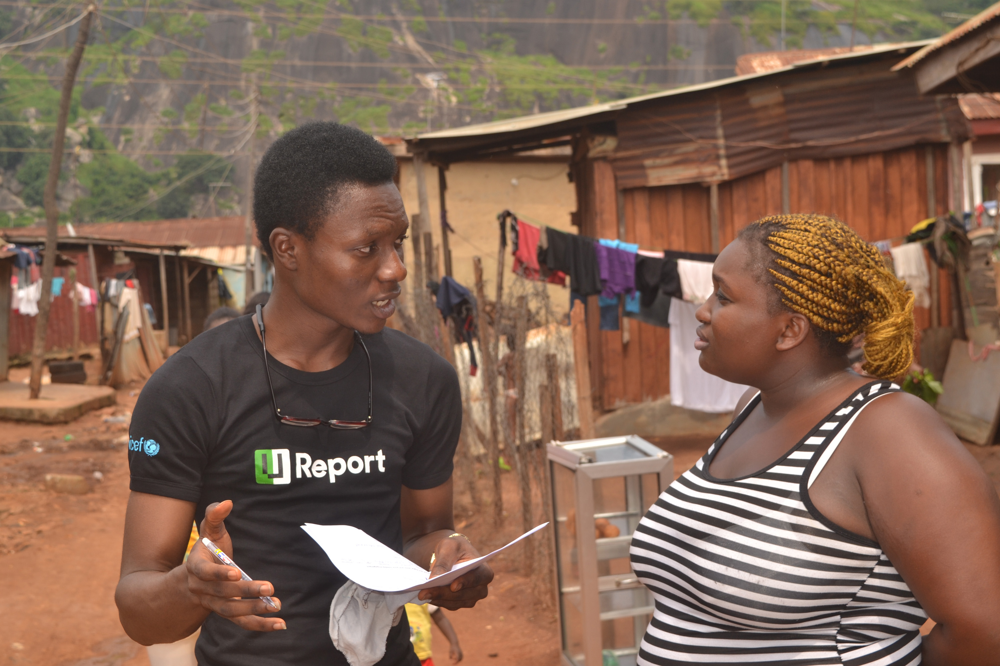

ARRESTING A PROBLEM DEFINES LEADERSHIP: THE STORY OF EMMANUEL OHANWE
I was born dumb for the first four years of my life and it was an awful experience for the first child of a newly wedded couple. I spoke without any medication or external intervention at the age of 5. I still can’t tell the reason for the delay, but it impacted my education immensely. Each time I reminisce my story of how dull I was, I blamed my speaking defect.
I was dull to nothing, taking the lead position from the rear side of things not until I took a faith-based decision at a young age in primary one (UBE grading) to be Godly. The story changed. The dull Emmanuel was now found amongst the top 3. I won several scholarships that sustained me all through my elementary education.
I was born with a grey silver spoon but somehow lost it at a tender age. I never knew that homes could miss a meal in a day or kids sent home for parents' inability to pay tuition fees until my father was laid off his job when I was eight (8) of age. It was hell. I had a rocky experience all through my academic journey.
I maintained excellence with over 6 awards from college including the student leader of the year, 2018, coupled with a second-class upper Bachelor’s degree in the engineering field. As the first child in the family of seven, I was conscious of footprints I set for my younger siblings. That marked my earliest journey into leadership.
Receiving an award from the dean of studies
I grew into bearing burdens and advocating for the downtrodden. I held 5 leadership positions in my College days but the ultimate was becoming the First Non-Indigenous Student Union Government President of over 7000 students.
During my reign in College, I built the maiden engineering Sculpture; Student Water Supply using hydraulic principles; Maintained a zero-protest yet result-driven reign; Made contribution to setting up Student Soft Loan facility scheme, Student work experience scheme; had several coverages including AIT, vanguard, Nation news, sunnews online etc
Nurturing thoughts to become a Global leader, I knew I had to be solving a problem with local impact and Global relevance. I started off by learning, building networks and knowledge base before co-founding startups. I am certified by Microsoft as a Data analyst; Certified by Harvard on entrepreneurship in emerging economies; By Berkeley Haas University, California on Project management; By Dangote Business School on emerging tech; By British Council on Ideas for a better world, leading change through policy making.
My interest in emerging tech, particularly, machine learning and Data science was influenced by books I read like "the Next 100 years: A forecast for the 21st century" and platforms I followed like the "World Economic Forum". I want to see emerging tech influence business innovation, international development and Future of food in Africa. I founded my first organization December, 2018 - Rising African Ambassadors (risingas.com) - Africa's mentorship ecosystem to help young confused graduates gain clarity and organize their ideas.
I knew this was a problem after a survey I carried out on Post graduation, which revealed that chunk of graduates from the African continent are confused. They need experienced ears that can listen to their confusion and organize their ideas. With 500,000 graduates from Africa’s most populous nation and the overwhelming rise of youth unemployment.
We were building Africa’s largest e-mentoring ecosystem that would connect graduates to experts across the table and they would return back to give back same to the society – a ripple unending effect. We approached policy makers like Sen. Akon EtimEyakenyi, late Sen. Rose Oko, Sen. Rochas Okorocha and Sen. BarauJibrin to scale this idea across Nigerian states and pass laws that support our detailed blueprint.
While sen.Akon Etim of Akwaibom moved a motion on a digital reform we proposed, others gave partial concern, though we maintained an open communication channel in tandem with our true values. We currently have 198 graduate members. We paused it due to sustainability factor. This project is designed to take a new lift by spring 2021.
In 2019, under Rising African Ambassadors, I got a team of 4 and we conducted a survey in DutseSokale and found out that 79% of farmers lived below 2 dollars despite bearing the burden to feed the nation. Their kids were reduced to mere harrows and sprayers. They abandoned schools. They became farm implements. We crowned those street kids as our junior ambassadors. Check out the projects for more details. I have a conviction that tech in agriculture would increase Africa's contribution to world produce and keep us prepared to feed 2 billion people by 2050 in Africa.
With the advent of Covid’19, I founded two startups that were designed to address problems associated with the pandemic. As the founder of Agrinotech.co - a startup with the mission to address the low tech purchasing power of rural farmers in low income communities while helping people like you with disposable income claim their share from agriculture trillion dollar sector - my team studies suggest that Post Covid, the crude method of farming will no longer be sustainable and there's need to leverage technology to optimize processes, increase yield, reduce cost of production and increase revenue.
Agrinotech.co is at the stage of product/market fit test with over 3000 farmers in our network. We project to reach 20,000 farmers in 2026 and are currently undergoing product development with Alibaba and African Leadership University.
I led my team into being selected and featured on amongst 200 out of 5000 Nigeria promising startups by Forbes Magazine.

Interviewing farmers kids that were not in school in Dutse Sokale, Abuja
I also co-founded a consulting business Eons Strategy to help businesses stay afloat now and post covid while purging, disinfecting, sterilizing and deodorizing their environment and facilitiesto retain and sustain their customers’ confidence.
I organize a coaching session yearly which I call Indaba. I invite seasoned industry experts to speak on subject that appears more significant to the applicable year. Indaba 2.0 held in April 2020 to give people actionable and applicable knowledge in the COVID era.
I am also a believer of ‘volunteering for a start’. I am a member of Young Africa Leadership Initiative -YALI, Edubrainics Africa and Raising New Voices. In my lifetime, I want to have emerging tech democratized in Africa and contribute to preparing Africans to be players in the Fourth Industrial Revolution with interest in Future of food, business innovation and international development.
Graduation at the SOZO-US Youth in Development bootcamp
I am the first child in the Family of seven from the Ohanwe’s dynasty, Mbaitoli LGA, Imo state. Based in Kano and Abuja with my higher education and college studies in Government Secondary School Owerri and Federal University of Petroleum Resources, Delta state respectively.
Creating value and making impact has no age requirement, that is my firm belief. Though will be celebrating my silver jubilee soon, I started getting into fellowships from age 21. From The Next Economy, SOZO-US fellowship, Zero-to-one foundation etc.
I have constantly been exposed to amazing networks making tremendous impact in their community. They have constantly inspired me to do more for humanity, acquire more skills, be more human and sustain relevance in all that I do.
As a default practice, I always pay the fellowships investment forward at the end of every cycle. Getting into this pool of talents remind me that Africa has exceptional young minds that simply need a little lift to scale what they do for larger impact.
Get battle-tested and chaff-free global opportunities